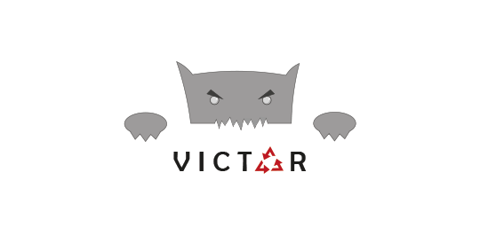

Meer weten?
Wil je meer weten over ons project?
Je kunt ook een kijkje nemen op ons team blog waar wij alles grondig documenteren.
Blog
Vragen of opmerkingen?
E-mail dan naar:
victor.monster@klantenservice.com
Kan jij de wereld redden door hem te verslaan?
Check het hier!“Hoe kunnen we van fossiele brandstoffen overgaan naar volledig duurzame energiebronnen, of in ieder geval zoveel mogelijk energie besparen?”
Student Creative Media & Game Technology
(Ondernemende technoloog)
Student Creative Media & Game Technology
(Betrokken technoloog)
Student Creative Media & Game Technology
(Ondernemende technoloog)
Student Creative Media & Game Technology
(Ontwerpende technoloog)
Wij zijn studenten aan de Hogeschool Rotterdam en ons team bestaat uit een complementaire groep van vier, ieder gespecialiseerd in een gekozen richting om een applicatie te ontwikkelen dat dit vraagstuk zal beantwoorden, wij zijn gemotiveerd om met onze applicatie de wereld bewuster te laten worden en kennis te maken met de circulaire economie!
Samen met de applicatie doorloop je alle stappen die nodig zijn om alles te weten te komen over de circulaire economie.
Door middel van het 'CompoSorteer' spel leer je meer over composteerbare producten.
Nadat je dit volledig onder de knie hebt kun je beginnen met etensresten verzamelen in een van de biologisch composteerbare zakjes, deze kunnen om de week opgehaald en ingeleverd worden bij een van de Victor compostbakken.
Elke keer dat je een volle zak hebt, kun je dit aangeven in de app. Nadat je dit vaak genoeg hebt gedaan kun je naar één van de 8 tuinen in de buurt om te zien waar het terecht komt en hoe het optimaal gebruikt kan worden. Daarnaast mag je dan ook een stuk groente of fruit meenemen uit de tuin zelf, als beloning voor de bijdrage die je geleverd hebt aan het circulaire systeem.
Wil je meer weten over ons project?
Je kunt ook een kijkje nemen op ons team blog waar wij alles grondig documenteren.
Blog
Vragen of opmerkingen?
E-mail dan naar:
victor.monster@klantenservice.com